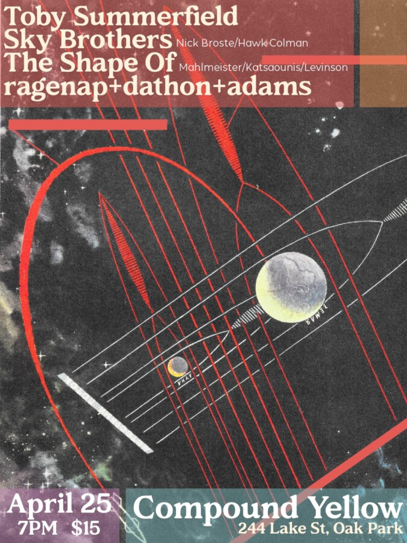

Side Yard Sounds: Toby Summerfield/Sky Brothers/The Shape Of/ragenap+dathon+adams
Announcing the next Side Yard Sounds:
Toby Summerfield / Sky Brothers / The Shape Of / ragenap + dathon + adams
Saturday, April 25, 7–9 PM
Tickets $15, available here. ___
Toby Summerfield:
Bassist, Guitarist, Pedal Steeler, Composer, Collaborator, Improviser playing in such past projects as Ex Eye, Crush Kill Destroy, Larval and Never Enough Hope.
Toby Summerfield (1978) has worked in creative music for 30 years. Operating in a space where rock music, minimalism, songcraft, improvising, atmosphere and emotion coexist.
Toby will be playing pieces from his new solo record called “Bodies of Water”. A description of his process is as follows: